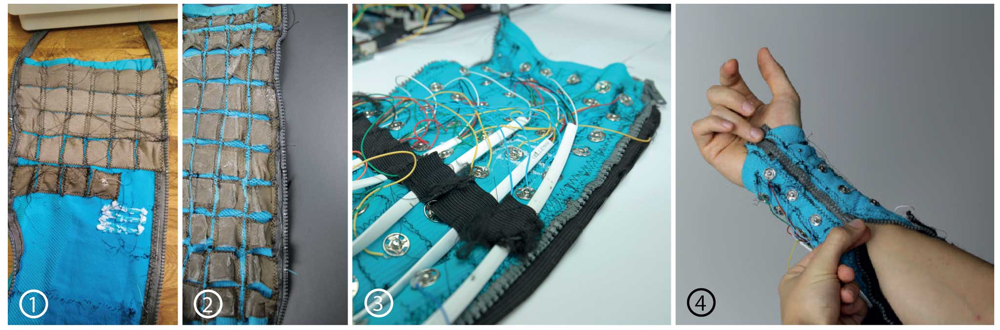
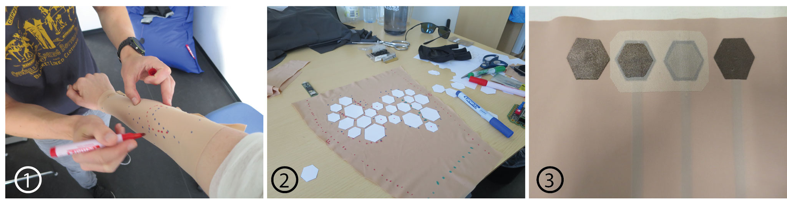
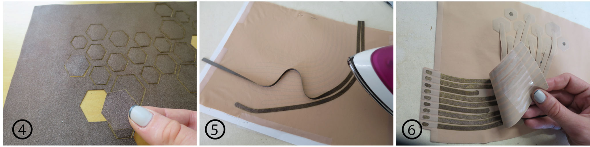
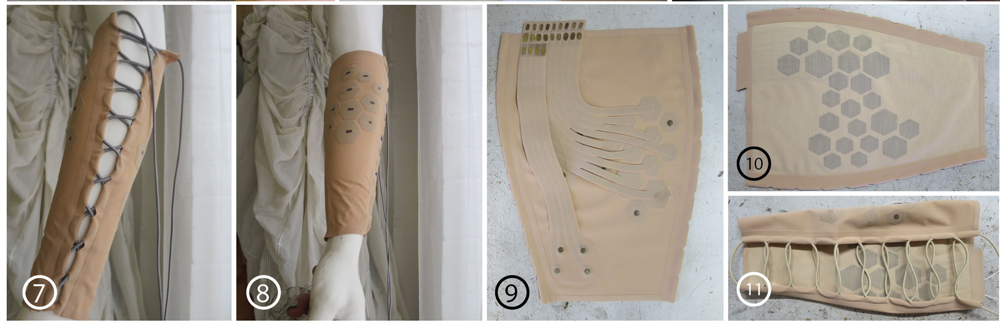
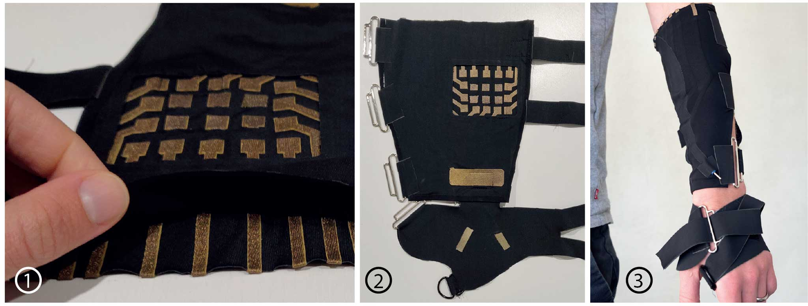

We built 3 iterations of electrode sleeves for electric muscle stimulation (EMS). Our interest here has always been to improve the resolution of control available through EMS. One proposed way of doing this is to use many small electrodes. Trying to apply these electrodes and manage their cabling individually, however, quickly becomes impractical. To this end, we sought to build wearable sleeves of electrodes.
Sleeve 1 - The Compress Sleeve

The Calibration Sleeve. This was the first wearable full-sleeve of electrodes for EMS in HCI. It consisted of 60 electrodes covering the entirety of the arm. (1) The sleeve was constructed by individually sewing electrodes into a base sports compression sleeve. The electrodes were cut from a conductive stretch fabric from Statex (Teknitex P130b). A zig-zag sewing stitch was used to maximise stretch. (2) This resulted in a dense grid of electrodes. We attempted to keep the electrodes apart, to maximise the potential resolution of the sleeve. (3) We used snap connectors to connect external wiring through to the conductive fabric, and individually soldered wires onto those snaps. However, the large number of electrodes created wiring complexity. (4) The sleeve was designed to support donning and removal of the sleeve by the individual. To ensure a good electrical connection to the skin, however, it is necessary to cover the electrodes in electrode gel. This sticky gel would prevent the arm from being able to slide into the sleeve, so we added a zip.
Sleeve 2 - The Tailored Sleeve
We worked with a tailor to design an improved 2nd sleeve.

(1) To improve the overall flexibility of the sleeve and support greater comfort, we sought to only cover muscle bodies in electrodes. Here, we are determining muscle locations across multiple users. (2) Next, we planned an electrode layout to provide the greatest coverage across a range of muscle locations for multiple users. (3) We wanted to maximise the durability of the sleeve and comfort of stimulation, so we test a range of different electrode designs.

(4) We laser cut the fabric, to improve consistency and replicability. (5) Instead of sewing, we turned to a fabric glue for connecting our various fabrics (Bemis Sewfree). By applying glue layers to different fabrics, we could simply iron the design together. (6) By stacking multiple layers of fabric, we could build up the complexity of the sleeves.

(7) We tried a different fastening design, which could support a broader range of arm sizing than the previous zip. We used a string-based, corset-esque fastening technique. (8 - 11) Showing the final fit and design of the Tailored Sleeve.
Here, we provide the Design Files used to produce the tailored sleeve. Open the pdf in Illustrator or your equivalent program of choice. This is a template that can be laser cut, glued, and ironed together.
Sleeve 3 - The Typing Sleeve
Finally, we produced a 3rd iteration of the sleeve, seeking to make manufacturing simpler and explore further improvements to the fastening designs.

(1) This sleeve features an array of 20 small electrodes in a grid-like pattern across the forearm, with (2) a large ground electrode at the wrist, and two small on hand electrodes on a half glove. This sleeve was designed to support typing, such that we could do away with the general control sought in the previous sleeves. (3) In this iteration, we explored both cummerbund and d-ring fasteners to fasten the sleeve to the arm. (D-rings are the best solution here!)
Here are the Design Files for the final sleeve.
Again, open the pdf in Illustrator or equivalent, to extract the various layers for laser cutting.Electronics
We make no contribution around electronics in this paper, but are beginning to work on attempting to improve wearability in this space, too. Below is an image of our current 24-channel EMS+EMG electronics stack, which we use for driving the typing sleeve. It's not terribly wearable. We would be happy to share the design, so please get in touch if you'd like to discuss.